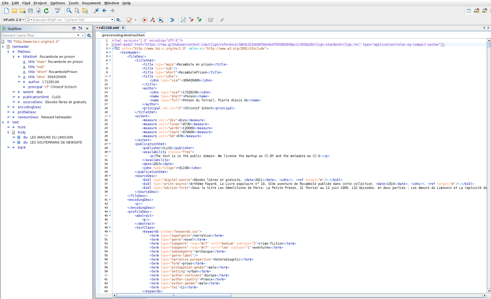
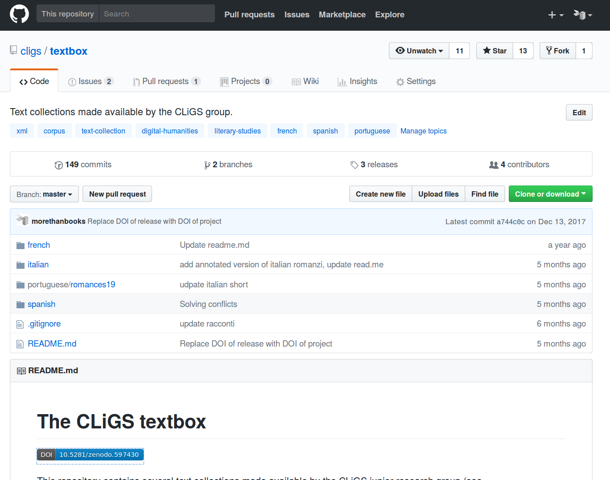
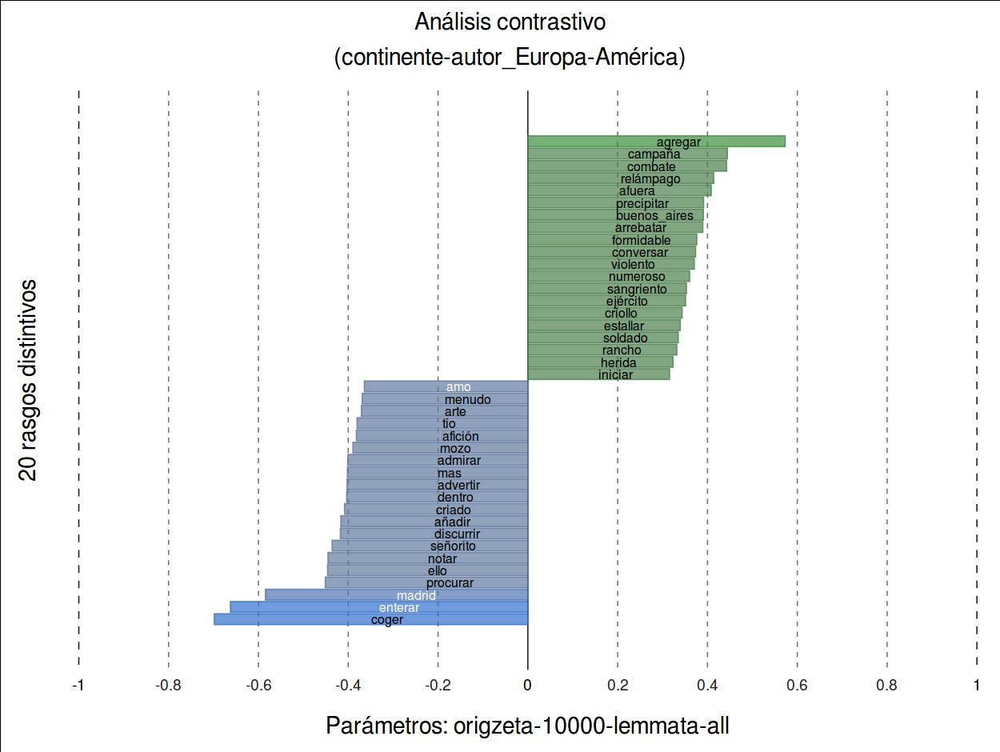
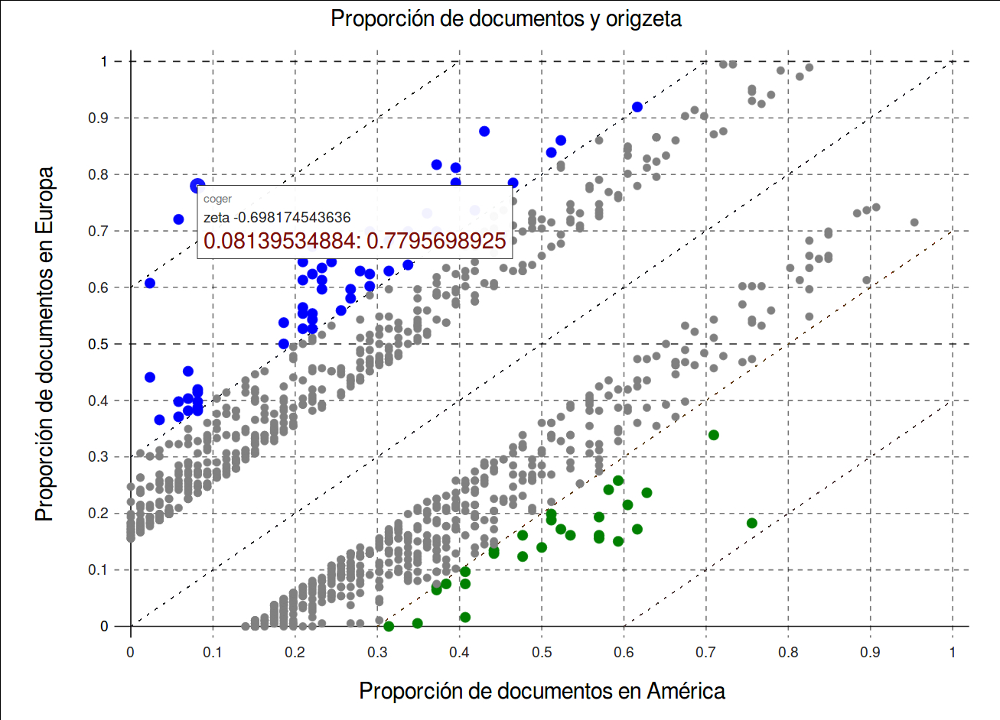
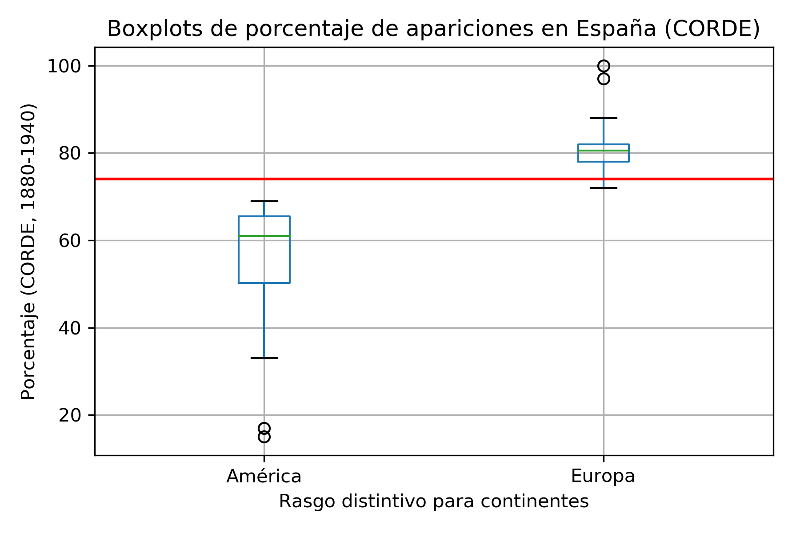
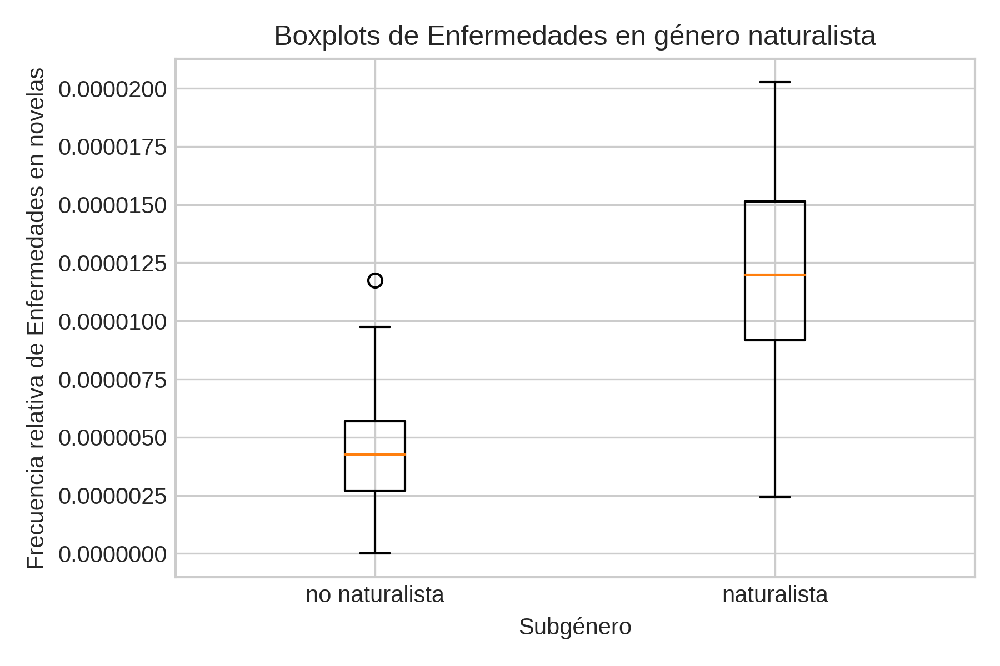
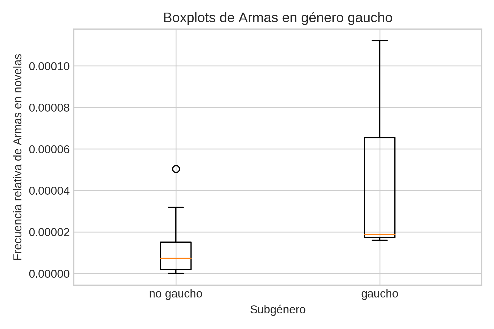
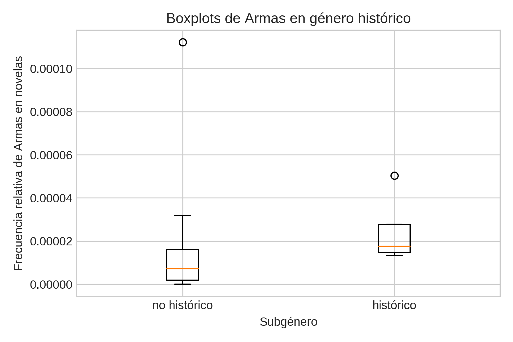

Ansätze für digitale und korpusbasierte Wortschatzanalysen
spanischer und hispanoamerikanischer Romane des 19. Jahrhunderts
Ulrike Henny-Krahmer und José Calvo Tello
(CLiGS, Universität Würzburg)
Kolloquium zur romanistischen Sprachwissenschaft
16. Mai 2018
Folien unter: https://hennyu.github.io/koll_rom_18/


Übersicht
- Hintergrund
- Nachwuchsgruppe CLiGS
- CLiGS-Textbox
- Beispiele für digitale Wortschatzanalysen
- Distinktive Merkmale mit Pyzeta
- Wortfeld-Analyse mit dem NDHE
- Wortschatzvergleich mit dem DRAE
1. Hintergrund
Nachwuchsgruppe
- Computergestützte Literarische Gattungsstilistik
- Nachwuchsgruppe am Lehrstuhl für Computerphilologie und Neuere Deutsche Literaturgeschichte in Würzburg (2014-2019)
- Frage nach dem Verhältnis von Gattung und Stil (Großgattungen, Untergattungen von Romanen, Dramen, etc.)
CLiGS-Textbox
- 9 Sammlung historischer literarischer Texte
- In verschiedenen romanischen Sprachen: Französisch, Spanisch, Portugiesisch und Italienisch
- In verschiedenen Gattungen: Roman, Theaterstücke, kürze Erzählungen
CLiGS-Textbox
- Texte: ?
- Tokens: ?
- In XML-TEI, PDF und plain text
- Metadaten
- Sprachliche Annotation (Freeling)
CLiGS-Textbox
- Collection of 19th Century Spanish-American Novels (1880-1916): 24 novels
- Corpus of Spanish Novels from 1880-1940: 39 novels
- Collection de nouvelles françaises du dix-neuvième siècle: 28 novellas
- Collection de romans français du dix-neuvième siècle: 36 novels.
- Collection de pièces the théâtre français du dix-septième siècle: 100 plays.
- Collection of 19th Century Portuguese Novels (1840-1910): 30 novels
- Collection of Italian Short Stories and Novellas (1880s-1920s): 90 short stories and novellas
- Corpus of Spanish Short Stories from 1880-1940: 193 single short stories
- Collection of Italian Novels (1850 and 1890): 10 novels
CLiGS-Textbox
CLiGS-Textbox
- Als GitHub repository veröffentlicht
- Die Texte sind frei verfügbar (CC BY)
- In Zenodo archiviert (DOI: 10.5281/zenodo.597430)
CLiGS-Textbox
2. Beispiele für digitale Wortschatzanalysen
Ermittlung distinktiver Merkmale von Textgruppen mit Pyzeta
Zeta
- Maße der Distinktivität von Merkmalen ("keyness")
- Von Burrows (2007) vorgeschlagen
- Sehr verbreitet in Stylometrie und Digital Humanities
- Implementiert in stylo oder pyzeta
Zeta
- Welche sind die Wörter, die spanische Romane und hispanoamerikanische Romane unterscheidet?
- 24 spanische Romane vs. 24 hispanoamerikanische Romanen (Argentinien, Kuba und Mexiko)
- Lemmatisiert, Zeta, Split = 10 000
Zeta
Zeta
{kind=link}
Vergleich mit Häufigkeiten in CORDE
Analyse von Wortfeldern mit dem Nuevo diccionario histórico del español (NDHE)
NDHE und Wortschatz in Romanen
- Nuevo diccionario histórico del español: web.frl.es/DH
- José Antonio Pascual und Mar Campos Souto (Instituo Rafael la Pesa, RAE)
- Reihenfolge der Makrostruktur nach Wortfelder
- Krankheiten, Waffen, Instrumente...
NDHE und Wortschatz in Romanen
- Tauchen Krankheiten (bzw. Wortschatz über Krankheiten) in naturalistischen Romanen häufiger auf?
- Tauchen Waffen in gaucho Romanen häufiger auf?
- Tauchen Waffen in historischen Romanen häufiger auf?
NDHE und Wortschatz in Romanen
- Binarisierung von Untergattungen (z.B. naturalistisch vs. nicht-naturalistisch)
- Lematisiert
- Behalten nur die Lemmata, die zu einem bestimmten Wortfeld gehören
- Zum Beispiel, von 481 Lemmata im Bezug auf Krankheiten in NDHE, nur 28 kommen in den Romanen vor
- Durschnittliche relative Häufigkeit pro Roman
NDHE: Krankheiten in naturalistischen Roman
NDHE: Waffen in gaucho Roman
NDHE: Waffen in historischen Roman
Wortschatzvergleich mit dem Diccionario de la lengua española de la Real Academia (DRAE)
Ausgangspunkt:
- Diccionario de la lengua española de la Real Academia (DRAE)
- aktuell 23. Edition (2014)
- > 93.000 Lemmata
- Analysekorpus
- Teilsammlung aus der CLiGS Textbox
- je 18 Romane aus Argentinien und Spanien (19.-20. Jh.)
Fragen
- Wie gut deckt das DRAE das Vokabular der Romane ab?
- Welches Vokabular ist für die Romane spezifisch, in dem Sinne, dass es nicht im Wörterbuch erfasst ist (z.B. "literarisches" Vokabular) oder besonders markiert ist, (z.B. historisches Vokabular)?
- Welche Unterschiede gibt es zwischen den Texten aus Spanien und Hispanoamerika?
Aufbereitung des Lexikons
- lexikographische Informationen müssen extrahiert werden
- E-Book des Wörterbuchs: Konversion in einfaches XML-Format
- Felder:
- Lemma
- grammatische Kategorie
- ob es Wortbedeutungen gibt, die geographisch oder stilistisch markiert sind
Aufbereitung des Analysekorpus
- Annotation der TEI-Fassungen der Romane mit FreeLing
- Lemmata
- grammatische Kategorien
- Auswahl: Substantive, Verben, Adjektive, Adverbien
Ergebnisse:
Verteilung der Wortarten
| Wortart | DRAE | Korpus |
|---|---|---|
| Substantive | 61 % | 55 % |
| Verben | 14 % | 19 % |
| Adjektive | 28 % | 19 % |
| Adverbien | 3 % | 6 % |
| gesamt | ~ 90.000 | ~ 30.000 |
Wörter im Korpus, die in DRAE vorkommen
| Wortart | Lemmata im DRAE | Tokens im DRAE |
|---|---|---|
| Substantive | 77 % | 98 % |
| Verben | 69 % | 98 % |
| Adjektive | 79 % | 96 % |
| Adverbien | 48 % | 92 % |
| gesamt | 74 % | 97 % |
Nicht abgedeckte Wörter
| Typ | Beispiele | Lemmata | Tokens |
|---|---|---|---|
| Wort mit historischer Schreibung | á, fué, habia, luégo, oir | 22 | 6.871 |
| Komplexe Form | a cada paso, hacer cargo, pues bien, tal vez, tomar parte | 49 | 3.851 |
| Zahl | 1, 2, 3, 4 | 5 | 2.270 |
| Lemmatisierung | acurrucar, bajito, milicos, prostituta, pulperías | 12 | 538 |
| mündlicher Ausdruck | ju ju, pa, usté, verdá | 4 | 350 |
| Anredeform | donna, misia, ño, pae, señá | 5 | 267 |
| Historische Form | díjole, púsose | 2 | 71 |
| Derivation | apresuradamente | 1 | 36 |
| gesamt | 100 | 14.254 |
Zwischenfazit
Analyse der häufigsten Wörter, die nicht im DRAE vorkommen, zeigt eher Besonderheiten der Daten und Interdependenzen zwischen NLP-Werkzeugen und dem Wörterbuch auf als stilistische Besonderheiten der Romantexte.
Ergebnisse, die auch in sprach- und literaturwissenschaftlicher Hinsicht interessant sind?
Zwei Autoren
- Eduardo Ladislao Holmberg (1852-1937), ARG
- Emilia Pardo Bazán (1851-1921), ESP
[Tabelle Holmberg]
[Tabelle Pardo Bazán]
[Tabelle markiertes Vokabular]
Fazit
- Verfügbarkeit von literarischen Texten in romanischen Sprachen
- Integration von Quellen und sprachwissenschaftliche Resourcen
- Zeta um distinktive Lemmata für Spanien und Hispanoamerika
- Wortfelder von NDHE definiert(Krankheiten, Waffen) häufiger in bestimmten Romanen (naturalisticher, gaucho, historischer Roman)
Literaturhinweise
- ...
Vielen Dank!
Folien unter: https://hennyu.github.io/koll_rom_18/
CLiGS: http://cligs.hypotheses.de/
Textbox: https://github.com/cligs/textbox/